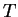
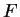
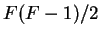
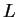
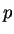

Next: Contig file
Up: Screen output
Previous: Processing matches
Contents
FISH first displays the key adjustable parameter of the block finding
stage, . Following this is a series of numbers which depend on both the
dataset and the adjustable parameters:
 , the total number of points in the grid
, the total number of points in the grid
- , the total number of features in the dataset
- the total number of cells in the grid, calculated as 
 , the proportion of cells in the grid that contain a point
, the proportion of cells in the grid that contain a point
 , the neighborhood size within which there is only a probability of
encountering another point if points in the grid are distributed uniformly at
random (see Equation 2.1)
, the neighborhood size within which there is only a probability of
encountering another point if points in the grid are distributed uniformly at
random (see Equation 2.1)
- MIN_BLOCK_SIZE, the number of points in the smallest block to be reported.
Once the blocks have been identified, FISH will also display the total
number of blocks.
The length distribution of the blocks is displayed as a vertical histogram. To
the right of each bar is listed the number of blocks of length , as measured
by the number of points. If the number of blocks is greater than 50, the true amount is not
represented by '*' characters and the block frequency is preceded by '...'.
To the left of the histogram is shown the corresponding -value for observing
a block of length (see Section 4.2.4), and the expected number, under the null model.
If the proportion of expected to observed blocks of length is greater than
BLOCK_PROB, then the frequency of observed blocks is followed by an exclamation
mark. This indicates that blocks of this length have not been observed sufficiently
more frequently than expected, and so the individual blocks may not be biologically
meaningful.
Next: Contig file
Up: Screen output
Previous: Processing matches
Contents
root
2003-06-27